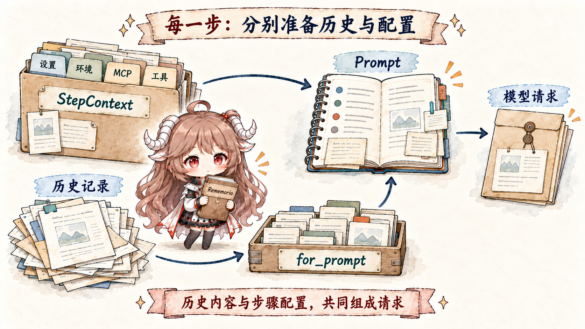
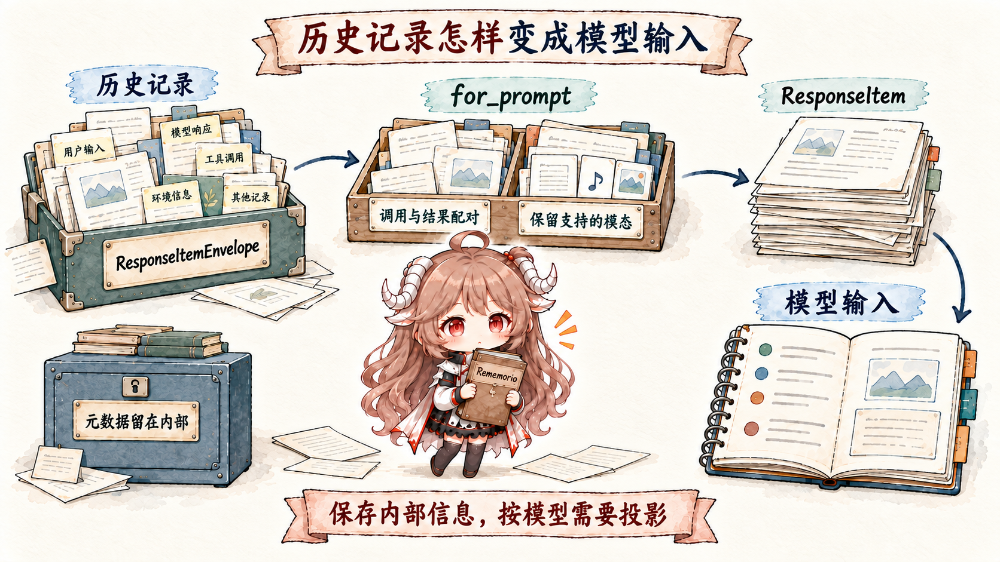
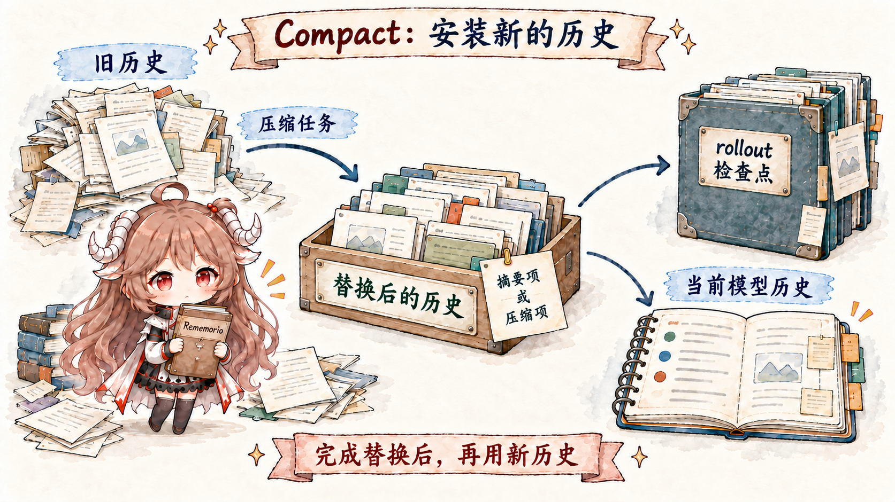
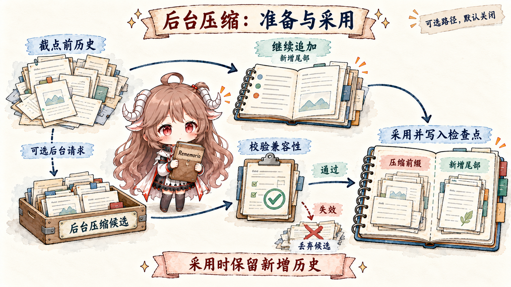

先从一个日常场景开始。你让 Codex 在一个仓库里修 bug。它读了 AGENTS.md，
搜了几个文件，跑了一次测试，测试失败后又看日志。中途你补了一句“别改生成文件”，
它又因为上下文接近窗口上限触发了一次 compact。第二天你恢复这个 thread，希望它还知道昨天做了什么。
如果把这件事理解成“消息数组越来越长”，很快就解释不通了。仓库规则、当前工作目录、sandbox 权限、 技能列表、工具 schema、工具输出、图片、推理 token、用户临时补充、压缩摘要、恢复基线，都不是同一种东西。 有些必须持久保存，有些只该在本轮给模型看，有些可以被截断，有些一旦丢掉就必须全量重注入。
先不看源码，先把三个词翻译成人话： thread 是一次可以恢复的工作会话； context window 是本次模型请求能容纳的上下文上限； compact 不是“删掉前文”，而是把旧 history 改写成一个可继续工作的摘要恢复点。
官方文档先说明产品行为：Codex 的 thread 是一次会话，包含 prompt、模型输出和工具调用； agent 工作时会继续从文件内容、工具输出和已完成工作中收集上下文；所有信息都必须放进模型的 context window，长任务可能自动 compact。源码要回答的是下一层问题：这些东西在运行时到底放在哪里， 什么时候进入模型，什么时候被摘要替换，恢复时又靠什么对齐？
官方 agent loop 文章
把外部约束说得更具体：一次模型请求由 prompt、tools、input 等部分组成，
长任务还要面对 prompt cache、context window 与 compact。源码层接着追问：
这些约束在 ContextManager、TurnContext 和 replacement history 里分别由谁承担，
哪些状态留下，哪些状态只进入本轮请求。
这里要补上 agent loop 里最容易被轻轻带过的一步：工具调用结束后，下一次模型请求不是凭空开始。
上一次模型产出的 reasoning、tool call，以及工具返回的 function_call_output，
都会按顺序回到下一轮 input 里。于是第二次请求的前半段，通常和第一次请求共享同一个稳定前缀，
后半段才追加刚发生的工具事实。
first inference:
tools (ordinary Responses)
input:
- base instructions
- user task
-> reasoning
-> function_call(call_id=A)
tool execution:
command returns:
function_call_output(
call_id=A
)
next inference:
tools (ordinary Responses)
input:
- base instructions
- user task
- reasoning
- function_call(call_id=A)
- function_call_output(
call_id=A
)
这里要分清完整的逻辑请求与网络传输。客户端仍先组装完整 input；但当前 WebSocket continuation 会比较前次请求及服务端输出。当非 input 字段兼容、旧 input 加返回项仍是当前 input 的前缀，且有可用 response id 时，它只发送新增项并携带 previous_response_id；条件不满足就发送完整 input。客户端始终能重建完整逻辑上下文；缓存复用与网络字节节省分别观测。
取材范围。 本文用官方文档确认产品行为，用 openai/codex 的公开源码解释机制，源码链接固定到同一公开快照。 当源码只暴露 remote compaction 的选择条件，而不暴露服务端摘要实现时，本文只描述可见生命周期， 不推断服务端内部算法。
这篇的阅读目标很简单：先分清 哪些结构负责保存状态， 再分清 哪些内容会进入模型请求。只要这两件事清楚了， 后面的 diff、compact 和 resume 都会落到同一条主线上。 后文只跟三次转换：运行环境怎样写入 history，history 怎样经过过滤和规整变成 prompt， compact 怎样把旧 history 替换成新的恢复点。
所以这篇只追六个问题：
- 一次 agent loop 里，模型输出、工具调用和工具结果怎样回到下一次请求？
- Codex 持久保存的 history，为什么不能直接等同于模型看到的 prompt？
- 每一轮开始前，哪些上下文会全量注入，哪些只发 diff？
for_prompt()这一步到底规整和过滤了什么？- compact 发生时，Codex 替换的是哪段 history，留下的恢复点是什么？
- 旧 rollback 记录的重放、resume 和模型切换为什么会影响下一轮上下文注入？
一、先把四种数据分开
读 Codex 上下文源码，第一步不是找一个叫“记忆模块”的地方。 真正需要先分开的，是同一个工作会话里的四种数据： session 级状态、turn/step 快照、durable history，以及本次真正发给模型的 request。 它们看起来都叫“上下文”，但保存位置、使用者和生命周期完全不同。
回到开头修 bug 的例子：仓库规则和权限基线属于 session 和 turn； 你临时补的“别改生成文件”会进入当前 turn 的输入和 history； 测试日志、工具输出、模型回复属于 durable history； 而模型下一次实际看到的，是运行时从这些记录里整理出来的一份请求视图。 混在一起讲，就会把“保存过”误读成“这次一定发给模型”。
TurnContext 保存整轮身份、初始设置及控制状态；每次采样使用的模型、环境、MCP 连接和工具路由，则由 StepContext 捕获为同一版。用户在工具执行中调整设置，可以影响后续采样，但不会把已经发出的请求和它执行的工具拼成两版配置。
| 数据 | 保存或生成它的结构 | 模型是否直接看到 | 需要保证什么 |
|---|---|---|---|
| session 状态 | SessionState |
不会整体进入模型 | 跨 turn 保存 history、权限基线、压缩窗口和恢复状态。 |
| turn 与采样快照 | TurnContext + StepContext |
部分转成上下文消息或 request 字段 | 让每次采样向模型提供的工具、执行环境与所用配置一致。 |
| durable history | ContextManager.items |
经过过滤和规整后才进入模型 | 保留可恢复的 API 消息、工具调用和压缩替换记录。 |
| model-visible prompt | for_prompt() + Prompt |
是本次请求 | 只给模型合法、适配当前模型能力、带工具 schema 的请求视图。 |
ContextManager
的注释说它是 thread history 的 transcript，但同一个结构里还有 history_version、
token_info 和 reference_context_item。最后这个字段很关键：
它是下一轮做 settings diff 的基线。
可以把它想成“上一轮环境的对照表”。如果上一轮权限是 workspace-write，
这一轮变成 read-only，有可信基线时只需要告诉模型“权限变了”；
如果基线丢了，Codex 就不再猜差异，而是全量重发当前环境。
baseline 不可信，就全量重注入。 这是后面旧 rollback 记录的重放、compact 和模型切换共同遵守的底线。
这就是本文的核心：Codex 的上下文不是一段不断变长的聊天记录。 运行时会持久保存 history；每一轮请求前，从中取出当前需要的内容， 整理成模型能接受的 prompt；history 太大时，再用 replacement history 写入新的恢复点。
| 后文叫法 | 它指什么 | 不要误读成 |
|---|---|---|
| durable history | 本地可恢复、可重放的历史记录。 | 模型每次完整看到的聊天记录。 |
| model request / prompt | 本轮请求真正交给模型的消息和工具说明。 | 内存里保存的全部状态。 |
| baseline / 基线 | 上一轮上下文快照，用来判断这轮只需发哪些 diff。 | 永远可信、永远能复用的缓存。 |
| replacement history | compact 之后安装的新 history。 | 贴在旧 history 旁边的一条摘要备注。 |
| request preparation | 从 durable history 生成模型请求的过滤和规整过程。 | 简单复制消息数组。 |
二、一轮 turn 先整理运行环境，再进入模型
现在看一轮 turn。run_turn
进入后，第一件事不是记录新用户消息，而是先检查旧 history 是否已经太大。
compact 的内部细节放到第四节；这里只需要抓住一个顺序：
压缩检查发生在本轮新消息写入 history 之前。
源码旁边的备注说明：当前 pre-turn compaction 发生在 context updates 和新用户消息被记录之前，
未来应该估算即将进入的上下文 diff 或全量重注入是否会把 thread 推过阈值。

旧 history 通过压缩检查后，run_turn 先捕获本次 StepContext，再写入环境上下文、技能及用户输入。采样前读取 history 的克隆，按该步模型的输入模态调用 for_prompt()。循环继续时，后续 step 可以重新捕获设置和能力；整轮 TurnContext 并不意味着每次模型请求永远使用同一工具目录。
turn starts
-> maybe compact old history
-> capture StepContext for this sampling request
-> inject full context or WorldState changes
-> load skills/plugins chosen for this turn
-> record user input and additional context
-> clone history
-> for_prompt(input_modalities)
-> build Prompt with tools and base instructions
-> stream model response
这里还有一个容易忽略的细节。
用户可能在模型工具调用中途补一句话，模型也可能因为工具结果回来而继续上一次回答；
这两种输入如果插到同一个位置，模型看到的接续关系就会变。
源码注释
说明 ModelClientSession 是 turn-scoped，并且 pending input 不是任何时候都立刻 drain 到 history：
turn 开头要先让 fresh input 被采样；auto-compact 之后也要先让模型或工具 continuation 接上。
这不是 UI 细节，而是上下文顺序不变量。
2.1 初始上下文是运行时合成的，不是用户消息
full initial context 由
build_initial_context_with_world_state
合成。它把运行时环境整理成 developer 或 contextual user message。
这些信息不是一条用户聊天消息，而是本轮请求必须携带的运行条件。
| 来源 | 进入请求时的形态 | 为什么不能当普通用户消息 |
|---|---|---|
| 模型、权限、cwd、日期、时区 | developer 或 contextual user message，以及 request 字段。 | 它们定义本轮模型、目录和权限，优先级高于用户临时描述。 |
| 开发者指令、协作模式、personality、用户指令 | 合成进 initial context 的结构化文本。 | 恢复或切换模型时需要重新建立同一套行为基线。 |
| skills、plugins、apps instructions、token budget context | 按本轮可用能力和预算生成 model-visible context items。 | 它们由运行时选择，不是用户在对话里随手说的话。 |
这些信息来自运行时配置和环境，不是用户在 chat 里说的一句话。把它们当普通用户消息会让优先级和恢复语义都变乱。
Codex 的做法是把它们合成成 model-visible context items，并在当前 turn 的
TurnContextItem
里保存结构化基线。
2.2 环境先形成 WorldState，再按基线发变化
仍以“修 bug 时把权限改成只读”为例。运行时需要知道旧环境、当前环境和模型已经收到的说明。当前实现把可比较的环境整理成 WorldState，并在 history 中保存 world_state_baseline；reference_context_item 则继续表示可持久恢复的 turn 配置基线。两者共同决定是否全量注入以及哪些状态发生了变化。
record_context_updates_and_set_reference_context_item 先为捕获的 step 构造 WorldState。没有 reference baseline 时，它生成完整 initial context 和完整 WorldState 记录；有基线时，通过 update_world_state 生成变化片段，并在 turn 配置改变时追加对应贡献项。
形状示意：
step = capture(settings + environments + MCP + tools)
world = build_world_state_for_step(step)
if reference_context_item is None:
history += full_initial_context(step, world)
rollout += full_world_state
else:
history += visible_world_state_changes
rollout += world_state_changes_if_any
persist TurnContextItem when required
advance the reference baseline写入顺序有实际意义：先记录模型可见的消息，再持久化产生这些消息的 WorldState，最后保存所需的 TurnContextItem。仅 WorldState 改变、却没有可见片段或 turn 配置变化时，不需要重复写 TurnContext。这样恢复时不会拿到一份声称“已通知模型”、实际说明却还没写入的环境基线。
每次采样前，record_step_world_state_if_changed用实际 StepContext 渲染状态：先追加模型可见片段，再推进 WorldState 基线并持久化 patch。完整上下文建立后，后续变化继续追加到历史尾部。
三、for_prompt() 会过滤和规整 history
当 run_turn 准备采样请求时，它不会把 ContextManager.items 原封不动发出去。
for_prompt()
会先 normalize history，再剥离历史元数据，返回当前模型可用的 ResponseItem 列表。
这一步可以概括为：history 要可恢复，发给模型的内容要符合当前模型能力。
ResponseItem 可以理解成模型请求里的消息、工具调用和工具输出单元。

normalize_history 会补齐缺失的调用结果、移除孤立的配对输出，并按模型能力剥离不支持的图片和音频。需要配对的 function/custom output 必须找到对应 call；具名 external output 可以独立存在，不能一概当作孤立结果删除。随后 for_prompt() 把 ResponseItemEnvelope 解包为 API ResponseItem：历史专用的来源、截断预算等元数据保留在本地，不作为该包裹结构直接发给模型。
durable history, shape-level:
user text
function_call(call_id=A)
function_call_output(call_id=A)
orphan function_call_output(call_id=old)
user image + audio
model-visible view for a text-only model:
user text
function_call(call_id=A)
function_call_output(call_id=A)
user text with unsupported image/audio stripped
同一层还有本地截断。
record_annotated_items
会按 truncation policy 处理 function output payload，避免单个工具输出把 history 撑爆。
而真正构造请求的
build_prompt
还会把工具 specs、parallel tool calls 支持、base instructions、output schema 等字段 放进
Prompt。工具 schema 不是聊天消息，但它们仍然是模型可见请求的一部分。
3.1 compact 触发前，要合并服务端计数和本地估算
for_prompt() 解释了“给模型看什么”，还剩一个问题：history 什么时候大到必须 compact？
Codex 的 token 判断不只读服务端最后一次 usage。
get_total_token_usage
会在 last token usage 之外，加上最近一次模型生成之后本地追加的 items；如果服务端没有把历史 reasoning tokens 算入，
客户端还会估算最后一个指令边界之前带 encrypted_content 的 reasoning items。这个数不是 tokenizer 精确计数，
估算函数
自己也说是 byte-based heuristic 和 coarse lower bound。
用一个形状级数字例子会更直观：服务端上次记下约 80k input tokens；
之后本地又追加了 8k 的工具输出和上下文更新；客户端再粗略估出 5k 历史 reasoning；
如果当前 auto-compact scope 是 BodyAfterPrefix，还要从 active 账里减去 20k 左右的 prefix baseline。
触发 compact 的不是某一个“权威数字”，而是这些账合成后和 scope limit、完整 context window limit 的关系。
这会影响 compact 触发。context_window_token_status
同时看 active context tokens、auto-compact scope tokens、scope limit 和完整 context window limit。
当 scope 是 BodyAfterPrefix 时，它会从 active tokens 里减去当前 auto-compact window 的 prefill baseline。
AutoCompactWindow
保存的就是这个窗口基线，且服务端观测到的 input tokens 会替换恢复时的估算值。
四、compact 安装可恢复的 replacement history
窗口接近上限时，Codex 生成摘要或 compaction item，选择需要保留的消息，再安装 replacement history 和完整恢复基线。压缩请求、结果完成和历史安装分别有明确边界。
成功压缩会安装一段可恢复的新 history，并写入与它匹配的上下文基线。 后续请求、resume 和 fork 都从这个替换结果继续。

4.1 每个压缩入口都安装完整上下文
pre-turn 在新输入写入前检查旧窗口；mid-turn 在模型还需要继续时检查预算；手动与 post-turn 也可触发压缩。这些入口现在共用replacement 构造：捕获当前模型的完整 initial context、WorldState 和 TurnContext 基线，随替换历史一起安装。切换模型时，执行摘要的模型可以是前一个模型，安装的上下文及 token 重估使用当前模型。
插入规则优先把 initial context 放在最后一个真实用户/agent 消息或保留的独立工具输出前；没有这类消息时放在 summary 或 compaction item 前。完整替换后，摘要或 compaction item 保持在保留消息之后，后续请求可以接着任务工作。
successful full replacement, shape-level:
earlier retained messages
refreshed full initial context
last retained user / agent message / standalone output
summary or compaction item
checkpoint:
Compacted(replacement_history, window, resume_metadata)
WorldState(full=true)
TurnContext(current baseline)4.2 本地摘要在 completed 后进入历史
local compaction 使用handoff prompt，要求摘要包含进度、决策、约束、剩余步骤和关键数据。请求先读 history 的克隆，再加入摘要任务。drain_to_completed把每个 OutputItemDone 暂存在本次 attempt 的 buffer 中；收到 response.completed 后才接纳成功输出，并按该阶段更新记录和 usage。断流或 incomplete 会结束这次 attempt，半成品摘要不会留在主 history 或 rollout 中，原有消息与工具结果仍可恢复。
pre-turn 压缩失败时，run_turn 仍会先完成输入 hook 并保存本次输入，再发布错误；用户新提交的任务因此留在可恢复历史中。
成功后，build_compacted_history从后往前保留近期真实用户消息，使用 20,000-token 文本预算，并把 SUMMARY_PREFIX 与 handoff summary 放进最后的 user message。完整 initial context 在规定边界插入；replace_compacted_history 安装历史并推进窗口，调用方重新估算 token usage。
4.3 远端 v2 保留哪些消息
远端 v2 的attempt先克隆 history，经 for_prompt_annotated() 取得输入及专用历史元数据，并加入 CompactionTrigger。收集逻辑要求 response.completed 和恰好一个 compaction 输出，才进入安装。失败按有限重试和回退条件处理；公开客户端代码能核实该生命周期，服务端内容生成算法由服务端实现。
保留选择包含真实用户消息、符合条件的 agent 消息，以及启用对应特性后的客户端 developer 消息。默认关闭的 retain_client_tool_outputs 还允许保留客户端显式标记 retain: true、具名且没有 call_id 的 function_call_output。它在远端 v2 和显式新窗口中保持原 role，并与其他保留消息共用 64,000-token 预算；工具输出整条保留，遇到放不下的一条时丢弃该条及更早内容。紧急裁剪在这种保留输出处停止。提交时的 retain 选择转成历史元数据 client_authored，请求投影会移除这层元数据。
eligible retained standalone output, shape-level:
function_call_output(name="task_context", call_id=None)
submission: retain=true -> history metadata: client_authored=true
feature: retain_client_tool_outputs=true
remote replacement:
retained messages and eligible whole outputs, within budget
refreshed initial context at its insertion boundary
compaction item4.4 可选后台压缩先产生候选

后台压缩由默认关闭的 async_compaction 控制，还要求 provider 支持 remote v2、token_budget 关闭。达到配置的窗口占比、尚未需要前台压缩时，运行时捕获历史前缀与 WorldState，发起独立请求；主 turn 继续追加消息和工具结果。pre-turn 启动还要等前台已建立后端模型 pin。相同历史 generation、模型和认证 owner 的 attempt 不会重复启动。
完成请求产生候选。pre-turn、需要 follow-up 的采样边界及 post-turn 检查点会检查就绪结果；前台压缩确实到期时，还可等待正在进行的兼容请求。采用检查核对模型 slug 与 compaction hash，安装前的检查再核对历史 generation、长度和认证 owner generation。追加的尾部继续保留；历史已被替换或兼容条件变化时，候选被丢弃，需要压缩时按条件转到前台。
captured prefix ── background request ── completed candidate
live history: captured prefix + newly appended suffix
compatible candidate:
compacted prefix + context rebuilt at cutoff + unchanged suffix
-> install complete checkpoint
stale candidate:
discard; run foreground compaction when required这里有两个完成边界：后台请求 completed 后可计入 usage，校验通过并替换历史后才算安装。即使候选被丢弃，已完成请求的 usage 仍会记录。停止 turn 会阻止新启动，已有请求由 session 持有；shutdown 取消剩余请求并等待 usage 处理结束。
4.5 replacement 与恢复基线一起写入 rollout
replace_compacted_history在 settings persistence lock 下安装新 history，并按顺序写入 Compacted、完整 WorldState、TurnContext 和当前设置事件。Compacted 保存 replacement_history、窗口信息、保留上下文及 resume_metadata；恢复因此能找到匹配的模型历史和配置。输入快照后接受的 goal edits 也会保留。安装成功后排队 session start hook，调用方重算 token usage。
五、恢复与新窗口会打断错误基线
如果只有向前追加，reference_context_item 很好维护。难点在旧 rollback 记录的重放、resume、compact 和新窗口之后。
这些路径都可能让历史里剩下的上下文片段和当前基线不再匹配。Codex 的策略不是继续拿旧基线 diff，
而是在不确定时清空基线，让下一轮全量重注入。
5.1 旧 rollback 记录为什么仍需清 baseline
想象恢复的旧 rollout 中记录了撤回最近两轮。重建后的视图会移除相应用户消息、模型回复和工具输出， 但 turn 边界附近还可能粘着一段 context update：比如当时注入的 cwd、权限、开发者指令片段。 如果这些片段的一部分被剪掉，旧 baseline 还继续说“我知道上一轮环境是什么”，下一轮 diff 就会建立在一段已经不存在的历史上。
drop_last_n_user_turns 现在用于重放历史 rollout 中的 rollback marker，而不是当前提交协议里的主动 rollback 操作。它仍会修剪切点前紧邻的上下文片段；若拆掉了混合 initial-context developer bundle，trim 逻辑 会清空 reference_context_item，避免下一轮对已经不存在的完整 bundle 继续发 diff。
rollback 的关键不是“删掉几条消息”，而是：一旦建立 baseline 的 bundle 不完整， 下一轮就不能再沿着旧 baseline 发 diff。
5.2 resume 和新窗口如何重建 baseline
resume 面对的是另一个问题：内存已经没了，thread 要从持久记录里重新站起来。 这时 Codex 不能只恢复聊天记录，还要恢复 previous settings、reference context 和 compact window id； 否则恢复后的第一轮就不知道自己应该继续 diff，还是重新注入完整环境。
resume 路径也同样把 history、previous settings、reference context 和 window id 作为一组恢复。
apply_rollout_reconstruction
从 rollout 重建这些状态；如果当前 auto-compact scope 是 BodyAfterPrefix，
它还会估算 prefix tokens，作为恢复后的 compaction window baseline。
显式新窗口的 start_new_context_window 会推进窗口编号和 id，用当前 step 与 WorldState 重建 initial context，再安装空 message 的 CompactedItem 和新的基线；启用相应特性时，还会在预算内保留客户端 developer 消息和显式标记的独立工具输出。它没有生成旧任务的语义摘要，因此不能把它与模型驱动的 compact 混为一谈。
到这里，四个核心不变量已经闭合： history 不是 prompt， baseline 不可信就全量重注入， compact 安装 replacement history， 旧 rollback 记录的重放和 resume 会打断错误基线。
六、几个常见误读
读完这段执行顺序，可以把常见误读归纳成一张表。它比“上下文管理很复杂”更有用，因为每一行都对应一个实际会出错的地方。
| 误读 | 源码里实际发生的事 | 如果按误读实现会怎样 |
|---|---|---|
| history 就是 prompt | ContextManager 保存 durable items，for_prompt() 再过滤和规整出模型请求。 |
orphan outputs、unsupported images 或错误 call/output 对会直接污染请求。 |
| 初始上下文每轮都重复发 | 有 baseline 时追加 WorldState 变化；baseline 缺失或不可靠时才全量重注入。 | token 浪费，或者更糟，沿着已经失效的基线发错误 diff。 |
| compact 只是摘要一下 | compact 生成摘要或 compaction item，安装 replacement history 并写入 rollout。 | 恢复时无法知道摘要替换了哪段 history，也无法重建上下文基线。 |
| token 账完全来自服务端 | Codex 合并服务端 usage、本地新增 items、必要的加密 reasoning 估算和 window baseline。 | 本地追加的大工具输出或上下文 diff 可能把请求推过窗口却没被提前发现。 |
| rollback 只删用户消息 | Codex 还会修剪紧贴边界的 context updates，并在必要时清空 baseline。 | 下一轮可能基于已经不存在的 initial context bundle 继续发 diff。 |
七、可以带走的运行时规则
这篇源码阅读最后可以收成几条更一般的 agent runtime 规则。
| 状态类型 | 应该放在哪里 | 进入模型前要做什么 | 保护的不变量 |
|---|---|---|---|
| 真实对话和工具证据 | durable history / rollout | 按模型能力过滤和规整，保持 call/output 成对。 | 恢复和检查历史时有完整记录。 |
| 运行环境和权限 | turn context + reference baseline | 首次全量注入，后续只发可信 diff。 | 模型知道当前环境和权限，且不会被旧配置误导。 |
| 工具能力 | tool router / prompt request | 普通 Responses 用 tools 字段；Lite 用历史中的 AdditionalTools。 | 工具 schema 与 runtime 执行面一致。 |
| 长线程压缩结果 | replacement history + compacted rollout item | 把摘要作为恢复用 handoff，必要时插回 initial context。 | 长任务可继续，但承认压缩是有损的。 |
| token 窗口状态 | token_info + auto_compact_window | 用服务端 usage 和本地估算共同判断。 | 避免只看一侧账导致过窗。 |
读到这里，后面的机制就有了共同入口。工具调用、权限系统、多 agent、 skills 和插件，都会回到同一个问题：运行时必须先决定状态保存在哪里， 再决定哪些内容应该进入模型请求。没有清晰的保存和转换规则，agent 越强，越容易把自己之前做过的事搅成一团。
参考源码与文档
- openai/codex 固定源码快照
- Codex 官方文档总览
- OpenAI：深入解析 Codex 智能体循环
- AGENTS.md 官方文档
- Codex skills 官方文档
- SessionState 字段
- TurnContext 定义
- ContextManager 字段
- run_turn 入口顺序
- build_initial_context_with_world_state
- record_context_updates_and_set_reference_context_item
- normalize_history
- context_window_token_status
- run_compact_task_inner_impl
- 默认 compact prompt
- replace_compacted_history
- drop_last_n_user_turns